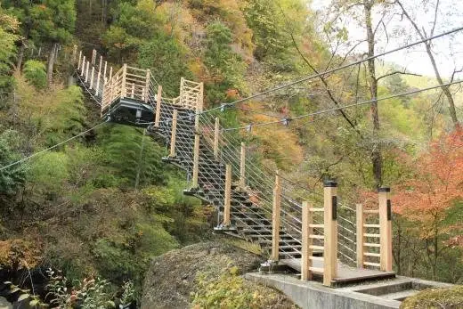
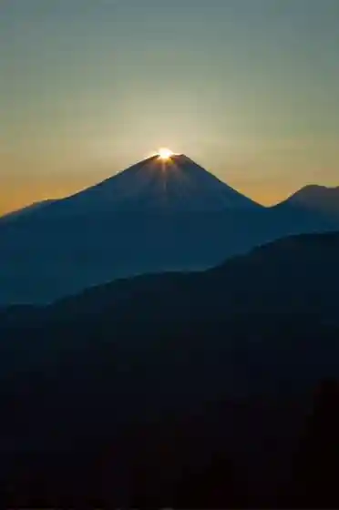
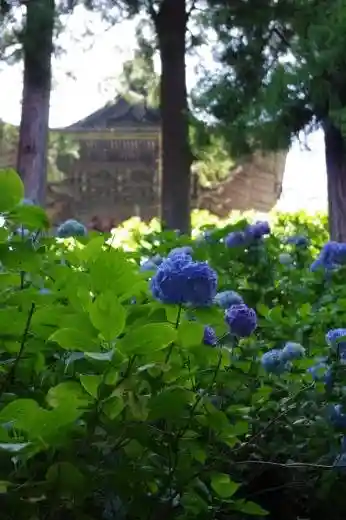
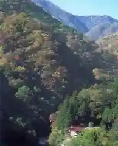
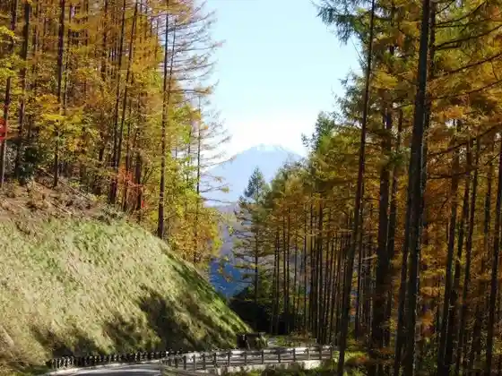

Japan / Yamanashi / Fujikawa
Fujikawa, Yamanashi
Fujikawa · Yamanashi
Fujikawa
Highlighted on the Yamanashi map.

Sights
Oyanagi Kawa Gorge / Kannon Taki (Oyanagawakeikoku / Kan no Ndaki)
Fujikawa, Yamanashi · 0556-22-7202 · Official / source link
Daiyamondo Fuji Byupointo (Daiyamondofujibyupointo Takaori)
Fujikawa, Yamanashi · 0556-22-7202 · Official / source link

Myoho Tera (Myohoji)
Fujikawa, Yamanashi · 0556-22-7202 · Official / source link

Togawa Gorge (Togawakeikoku)
Fujikawa, Yamanashi · 0556-22-7202 · Official / source link

Maruyama Rindo (Maruyamarindo)
Fujikawa, Yamanashi · 0556-22-7202 · Official / source link

Shuzo Gyararii (Roku Sai) / Yorozuya Jozo Mise (Sakaguragyarariirokusai / Kabushikigaishayorozuyajozoten)
Fujikawa, Yamanashi · 0556-22-6931 · Official / source link
Yamanashiken Shinrin Sogokenkyusho Mori no Kyoshitsu (Yamanashikenshinrinsogokenkyujo Mori no Kyoshitsu)
Fujikawa, Yamanashi · 0556-22-8111 · Official / source link
Daihoshi Park (Oboshikoen)
Fujikawa, Yamanashi · 0556-22-7202 · Official / source link
Shofuku Tera (Shofukuji)
Fujikawa, Yamanashi · 0556-22-0218 · Official / source link